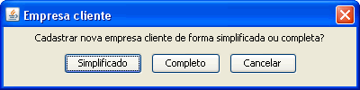
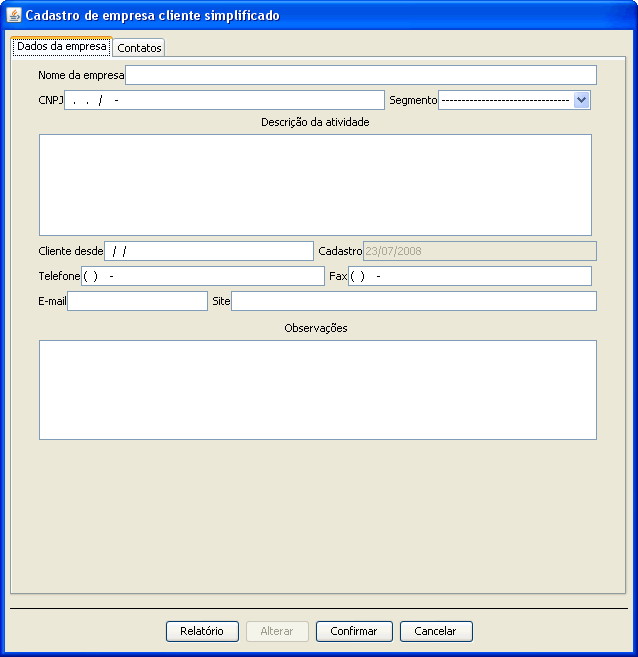
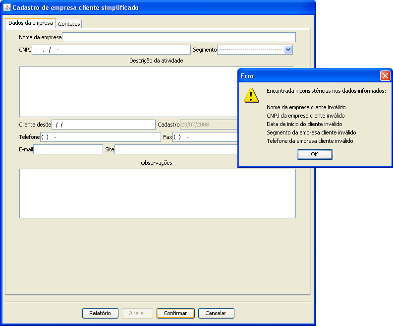
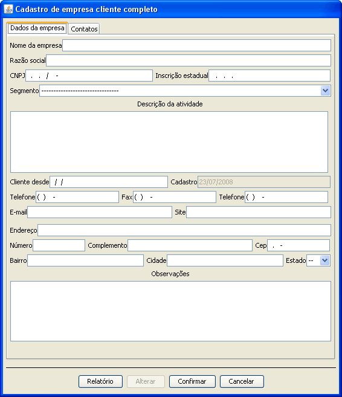
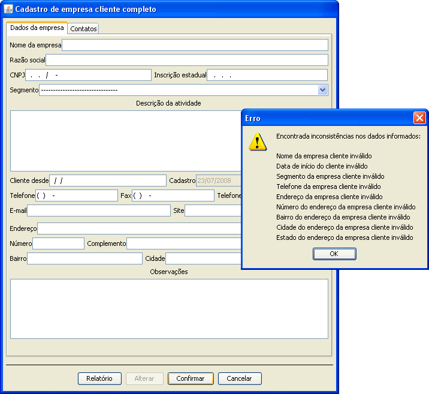
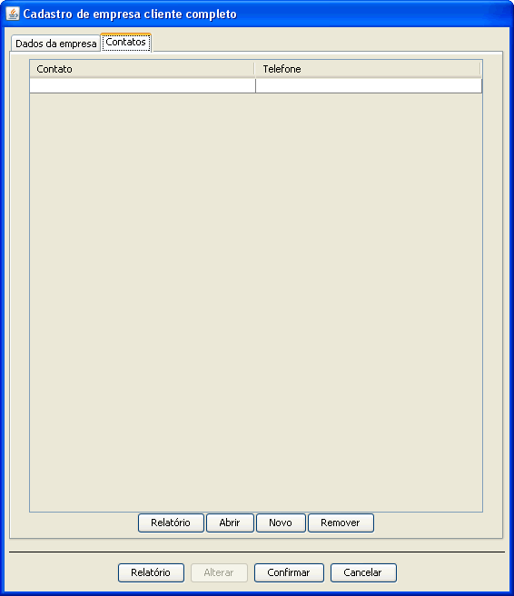

- Iniciando cadastro de uma empresa cliente

Para cadastrar nova empresa cliente é necessário escolher o tipo de formulário que deseja preencher o simplificado ou o completo.
- Simplificado

O cadastro simplificado não é necessário inserir dados como endereço é somente para se ter um controle sobre compras desta empresa e contatos.
- Dados principais(Cadastro simples)

O cadastro simples exige que seja inseridos alguns dados tendo-os como essênciais. A falta de algum deles impedirá o cadastro da empresa cliente.
- Completo

O cadastro completo ja é necessário inserir dados como o endereço da empresa cliente. Este tipo de formulário permite alcançar um nível maior de gerenciamento.
- Dados principais(Cadastro completo)

O cadastro completo tem como essências dados mais completos sobre a empresa cliente. A falta de algum deles impedirá o cadastro da empresa cliente.
- Contatos


Na última guia se tem o cadastro de contatos da empresa cliente permitindo cadastrar quantos contatos possuir.